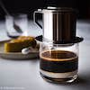

13. Vietnamese Coffee
If you want to try a different method of brewing coffee, Vietnamese coffee is a great option. Simply add sweetened condensed milk to the bottom of a heat-proof glass, then place a Vietnamese coffee filter over your glass. Add your desired amount of ground coffee and pour nearly boiling water over it. This will result in a creamy, sweet type of coffee drink. (Third Wave Coffee website)